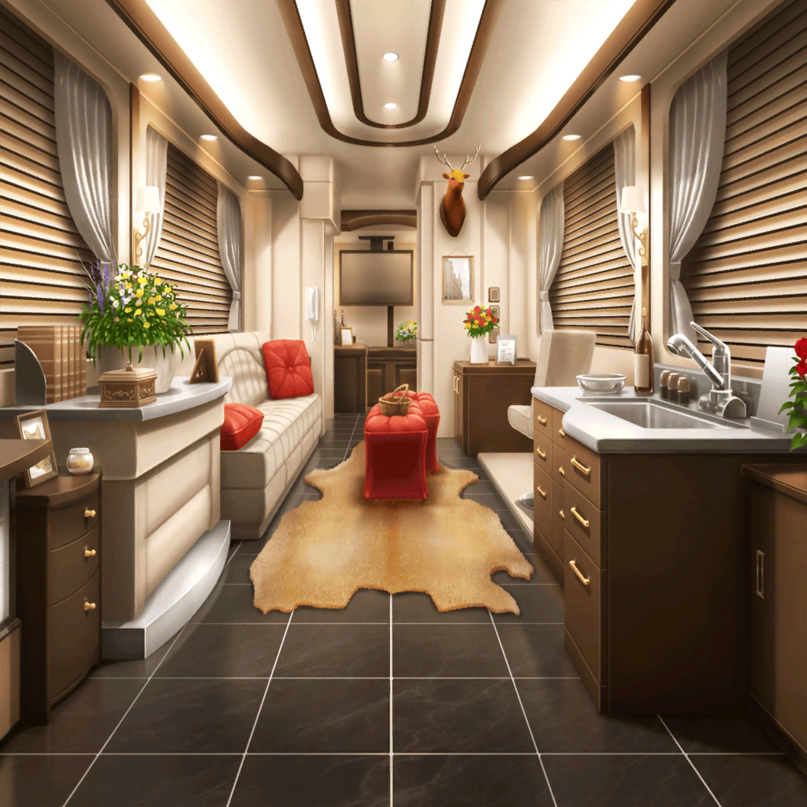

弦巻家 車内
香澄
すごーい！
こんなすごい車でコテージまで送ってもらえるなんて！
こころ
車ならあっという間に着いちゃうわよ！
あっという間なんだから！
日菜
さすがに、あの別荘から香澄ちゃん達のコテージまでは、
結構、距離があるしねー
つぐみ
話ながらだったから気が付かなかったけど、
確かにずいぶん歩いたかも……
蘭
なんにせよ、送ってもらえてよかった。
さすがに眠くなってきたし
つぐみ
うん、私も……
ふぁ……
香澄
えー！？
むしろ私、目が冴えちゃったよ！
香澄
だってさ、すっごい星だったでしょ！？
どこ見ても、星、星、星！
おまけに流れ星まで！
香澄
興奮して眠れないよー！
蘭
確かに、興奮はしたけど……
眠いものは眠いって
香澄
そ、そんなぁ……
日菜さんは起きててくれますよね！？
日菜
うーん、ちょっと無理かなー。
車に乗ったら眠くなってきちゃった
香澄
えー、寝ないでくださいよ！
星について話しましょうよ～！
日菜
そんなこと言われても眠くて頭働かないー……
香澄
あ、そういえば人が住める星って見つかりました？
こころ
はっ……！
流れ星に夢中で、すっかり忘れてたわ！
日菜
ま、あれだけ星があるんだからどれかしらは住めるってー。
そういうわけで、おやすみー
香澄
うー……日菜さん……
香澄
そだ！ こころんがまだいる！
こころん、星の話を……
こころ
ｚｚｚ……
香澄
さっきまで起きてたのに！？
蘭
香澄も少し休んだ方がいいよ？
それじゃあ、おやすみ。
あたしも、もう限界……
つぐみ
すー……すー……すー……
香澄
みんな、寝ちゃった……
香澄
でもでも！ 私は寝られそうにないもんっ！
あんなたくさんの星見ちゃったら……！
香澄
やっぱり私があの日感じた鼓動は、
夢なんかじゃなかったんだよね！
香澄
だから今も星を見て、
こんなにワクワク、ドキドキしてるんだよ！
香澄
う～！ 気分乗ってきた！
さっきは止められちゃったし、思いっきり弾いちゃえ～！！
香澄
ランダムスターも、今夜はいつも以上に楽しそう！！
これも、星を見たからなんだ～！
香澄
さいっこう！
満点の星空、また見た～い！
蘭
香澄、うるさいよ……
はぁ……せっかく寝たのに
つぐみ
う、う～ん……
こころ
ｚｚｚ……
蘭
あんなにうるさかったのに、
なんで、こころは眠ってられるんだろう……
日菜
あはは、香澄ちゃん、テンション上がりすぎー
日菜
でも、香澄ちゃんみたいに、
こんなに楽しいって思えるのはいいことじゃん？
香澄
そうですよね！
楽しいって思えるのは、とっても素敵なことですよね！
香澄
だから、いっぱい歌っちゃうよ～！！
つぐみ
あはは……香澄ちゃん、本当に元気だね
日菜
にしても、こころちゃん、本当にすごいね。
こんなに騒いでるのにぜーんぜん、起きないよ
香澄
じゃあ、私がランダムスターで子守歌を奏でてあげる！
きっと星の夢見れちゃうよ！
香澄
それ、みんな、眠れ～！

蘭・つぐみ・日菜
もう、うるさいよ！
もう、うるさいってば〜〜！！